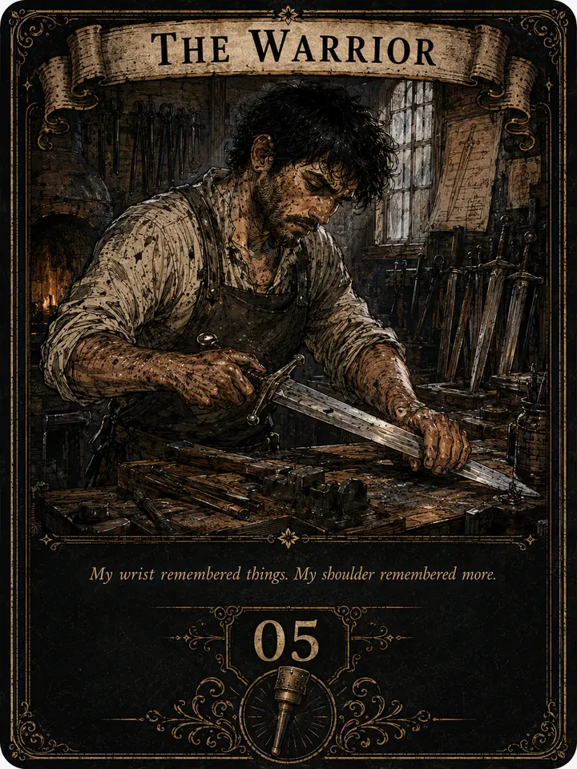
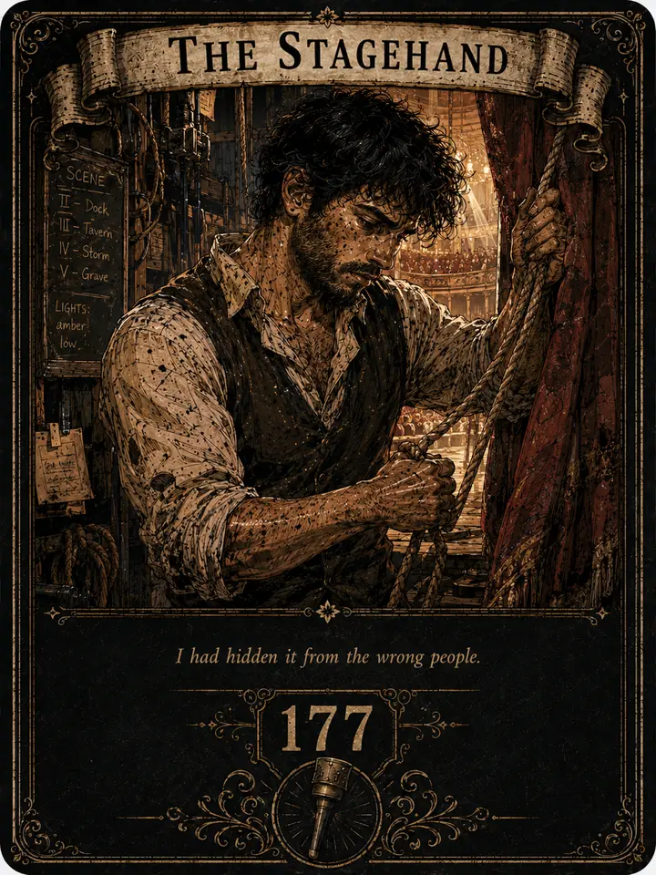
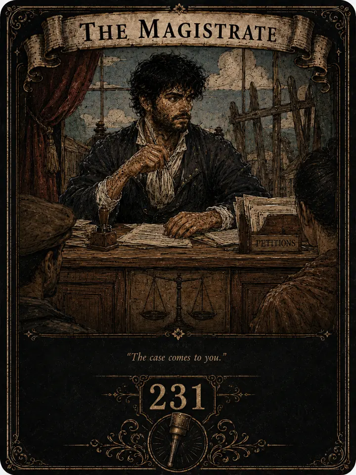

An illustrated fantasy novel
PEG-LEG
GREG
He got his life back.
The world kept going.
Greg wakes up nineteen again with decades of experience and none of what he spent a lifetime earning: no rank, no reputation, no fortune, no powerful body, no place in the world. Everyone else is still living their first life. They have jobs to do, debts to collect, magic they already understand, and no reason to make room for him. Greg remembers what he became. This time, he gets to decide what happens on the way there.
The novel
Books
BOOK IChapters 1–82

ACT I · Chapters 1–20THE SECOND LIFE
The impossible morning becomes a second life.
ACT II · Chapters 21–63MAKING A PLACE
Carrow becomes work, people, obligations, and a place to stand.
ACT III · Chapters 64–82THE NEW BASELINE
The terms of Greg’s second life change.
BOOK IIChapters 83–180

ACT I · Chapters 83–99A LIFE IN CARROW
Work, magic, friendship, Lyssa, and theatre settle into one lived-in life.
ACT II · Chapters 100–137THE STAGE DOOR
The theatre becomes another working doorway into Carrow.
ACT III · Chapters 138–180THE COMPANY ROAD
The company takes its work beyond the familiar rooms of Carrow.
BOOK IIIChapters 181–320

ACT I · Chapters 181–219THE WORKING COMPANY
Company work becomes routine, social, and increasingly interconnected.
ACT II · Chapters 220–280THE PRICE OF ATTENTION
Ordinary work draws new attention, obligations, and pressure.
ACT III · Chapters 281–320THE WIDER LIFE
Work, magic, travel, household life, and the city widen beyond any single lane.
BOOK IVChapters 321–381

ACT I · Chapters 321–330WHAT THINGS COST
Money, tools, risk, and opportunity become choices Greg can increasingly make for himself.
ACT II · Chapters 331–381BEYOND THE DOOR
Greg’s useful life reaches farther beyond home while strange boundaries begin answering back.